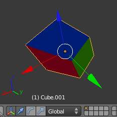
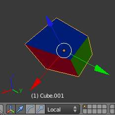
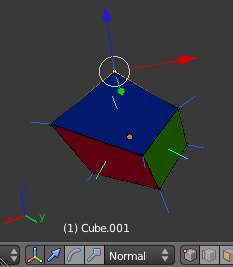
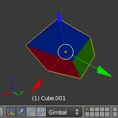
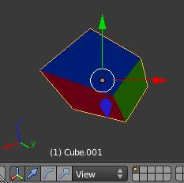

变换 Orientations¶
参考
Alt-Spacebar变换 Orientations Menu.
Orientations affect the behavior of 变换ations: Location, Rotation, and Scale.
You will see an effect on the 3D Manipulator (the widget in the center of the selection),
as well as on transformation constraints
(like axis locking).
This means that, when you press G-X, it will constrain to the global X-axis,
but if you press G-X-X it will constrain to your 变换 Orientation s X-axis.
The Orientations options can be set on the 3D视图’s header (or “footer”,
since it is at the bottom of the view by default),
or with Alt-Spacebar or through the Orientation menu in a 3D视图 header.
In addition to the four built-in options, you can define your own custom orientation (see Custom Orientations below).
Our Demo Cube¶
To demonstrate the various behaviors, we add some colors to the default cube, rotate it -15° along its local Z- and X Axes, and we scale its “y” face down.
Please note two things:
- The “Mini-axis” in the lower-left corner, which represents the Global X, Y, Z orientation.
- The “Object Manipulator”
widget emanating from the selection, which represents the current 变换 Orientation.
- If you click on one of the axes of the Manipulator with
LMB, it will allow you to constrain movement to only this direction. An example of a keyboard equivalent isG, Z, Z. - If you
Shift-LMBclick, it will lock the axis you clicked on and allow you to move in the plane of the two remaining axes. The keyboard analogue isG, Shift-Z, Shift-Z.
- If you click on one of the axes of the Manipulator with
Orientations¶
- Global
- 
Global.
The manipulator matches the global axis.
When using the Global orientation, the orientation’s XYZ matches world’s XYZ axis. When this mode is selected, the local coordinates of the object are subjected to the Global coordinates. This is good to place objects in the scene. To constrain an axis, press
Gand the desired axis. To constrain to a local axis, press the desired axis two times. The difference between Global and Local, is more noticeable when you have an object in which the origin is not located at the exact center of the object, and does not match the Global coordinates. - Local
- 
Local.
The manipulator matches the object axis.
Notice that, here, the Manipulator is at a slight tilt (it is most visible on the object’s Y-axis, the green arrow). This is due to our 15° rotation of the object. This demonstrates the difference between local coordinates and global coordinates. If we had rotated the object 90° along its X-axis, we would see that the object’s “Up” is the world’s “Forward” – or the object’s Z-axis would now be the world’s Y-axis. This orientation has an effect on many parts of the interface, so it is important to understand the distinction.
- Normal
- 
Normal.
The Z-axis of the manipulator will match the normal vector of the selection.
In 物体模式, this is equivalent to Local Orientation, in 编辑模式, it becomes more interesting.
As you see, the light blue lines indicate the faces’ normals, and the darker blue lines indicate the vertex normals (these were turned on in the
NProperties Panel under and Vertex). 选择 any given face will cause our Manipulator’s Z-axis to align with that normal. The same goes for Vertex Select Mode. Edge Select is different – A selected Edge has the Z-axis aligned with it (so you will have to look at the Manipulator widget to determine the direction of X and Y). If you select several elements, it will orient towards the average of those normals.A great example of how this is useful is in Vertex Select Mode: Pick a vertex and then do
G, Z, Zto tug it away from the mesh and shove it into the mesh. To make this even more useful, select a nearby vertex and pressShift-Rto repeat the same movement – except along that second vertex’s normal instead. - Gimbal
- 
Gimbal.
Gimbal’s behavior highly depends on the current Rotation Mode (accessible in the
NProperties Panel in the 3D视图, in top section, 变换).- XYZ Euler
- The manipulator handles are aligned to the euler axis, allowing you to see the discreet XYZ axis underlying the euler rotation, as well as possible gimbal lock.
- Axis Angle
- The X, Y, and Z coordinates define a point relative to the object origin through which an imaginary “skewer” passes. The w value is the rotation of this skewer. Here, the Manipulator’s Z-axis stays aligned with this skewer.
- Quaternion
- Though Quaternion rotation is very different from the Euler and Axis Angle rotation modes, the Manipulator behaves the same as in Local mode.
- View
- 
View.
The manipulator will match the 3D视图:
Y: Up/Down X: Left/Right, Z: Towards/Away from you. This way you can constrain movement to one View axis with
G-X-X.
Custom Orientations¶
参考
Ctrl-Alt-SpacebarCustom orientation.
You can define custom transform orientations, using object or mesh elements. Custom transform orientations defined from objects use the local orientation of the object whereas those defined from selected mesh elements (vertices, edges, faces) use the normal orientation of the selection.
The 变换 Orientations panel, found in the Properties Panel, can be used to manage transform orientations: selecting the active orientation, adding and deleting custom orientations.
{kind=link}
Renaming a Custom Orientation.
The default name for these orientations comes from whatever you have selected. If an edge,
it will be titled, “Edge,” if an object, it will take that object’s name, etc. The Toolshelf
(T in the 3D视图)
allows you to rename the custom orientation after you press Ctrl-Alt-Spacebar.
Custom Extrusion.
The technique of creating custom orientations can become important in creating precise meshes. In Fig. Custom Extrusion., to achieve this effect:
- Select the object’s sloping top edge
- Create a Custom Orientation with
Ctrl-Alt-Spacebarand rename it “Top Edge”. - Select the objects’s bottom, right edge.
- Extrude with
E. - Cancel the extrusion’s default movement by pressing
RMBorEsc. - Hit
Gto reinitiate movement. - Hit
Z-Zto constrain to the “Top Edge” orientation.